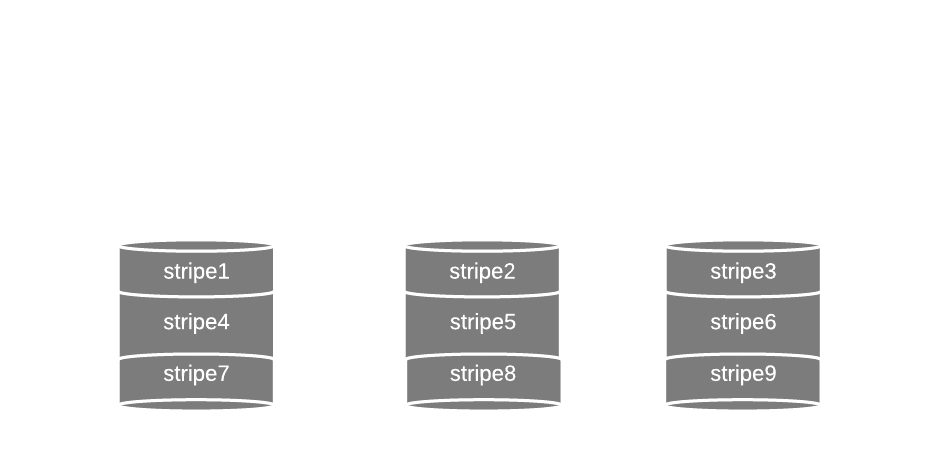
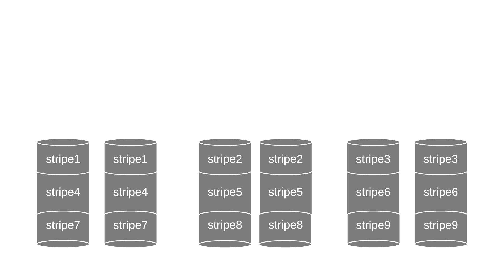

RAIDWhile Backup always remains vital for preventing data loss, other methods can be deployed in order to decrease dependence on it, considering the necessary recovery time as well as the important amount of investment that are needed to create a robust backup plan. In this article we will discuss a storage technology known as RAID (redundant array of independent disks), its different types and advantages. |
 |
|---|
DefinitionInstead of using one big disk for storing data,RAID technology, as the name entails, relies on dividing the disk into an array of smaller disks,then applying a process called "striping" to these disks where data will be divided into parts that are stored accross multiple parts of the disks.for instance parts of a file can be stored across multiple disks.this process has the advantage of decreasing the price needed to store the data as well as increasing the writing and the reading speed. The method that we have discussed so far is called "RAID 0" and it is considered the first level of the RAID technology. Later levels rely on another process called "mirroring" where the data inside a certain disk will be replicated in another disk. this process ensures the redundancy of data and prevents its loss. RAID 10RAID 10 implements both of the mirroring and striping processes in the mentioned order, thus we have disks that are grouped in pairs of two and both disks of a pair contain the same data. This configuration ensures that data is not lost even if one disk of each pair is dead. RAID and parityFor RAID of level 4 and beyond the confiugration include parity bits which are bits that are added to the data and permit the detection and correction of errors RAID 4 and 5 can correct one bit flip while RAID 6 can correct 2, in other words, if a disk dies inside a configuration of RAID 4 or 5 no data is lost and the dead disk can be detected and replaced by a new one. The same is true for RAID 6 but it can handle the death of two disks. |
  |
|---|---|
RAID and securityRAID technology is effective at preventing the loss of data on hard disks by protecting from accidents such as the death of a hard disk thanks to the concepts discussed earlier, however RAID technology is by no mean a replacment for backup systems or other security measures. In fact data can still be corrupted or infected by malwares even when using the RAID technology, however the advantage of using it when it comes to security is releaving pressure from the rest of the system (e.g. backup system). |
Chapter Security |
MohamadAli Atwi |
atwim@usi.ch |
|---|